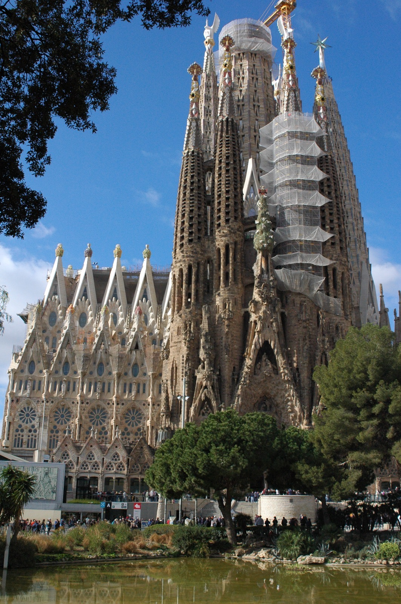
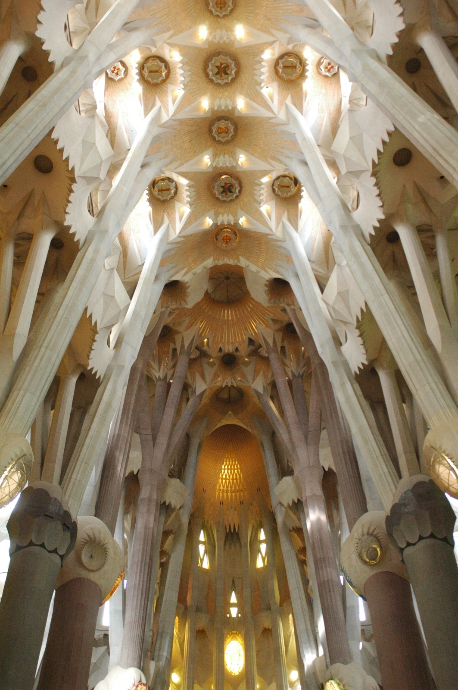

Sagrada Familia
Description :
La Sagrada Família est l'une des attractions les plus emblématiques de Barcelone, en Espagne, et l'un
des chefs-d'œuvre les plus célèbres de l'architecte catalan Antoni Gaudí. Cette basilique inachevée est un symbole
de la ville et une icône de l'architecture moderne.
Conçue par Gaudí en 1882, la construction de la Sagrada Família est toujours en cours, et elle est
prévue pour être achevée dans les prochaines années. Malgré son incomplétude, la basilique attire des millions de
visiteurs chaque année, fascinés par son architecture unique et innovante.
La Sagrada Família se distingue par ses tours élancées, ses sculptures détaillées et ses façades
richement décorées, qui racontent des histoires bibliques et symboliques. La basilique est également célèbre pour
son intérieur spectaculaire, caractérisé par ses colonnes en forme de troncs d'arbres, ses voûtes célestes et ses
vitraux colorés, qui créent une atmosphère magique et sacrée.
La visite de la Sagrada Família offre aux visiteurs une expérience inoubliable, où l'art,
l'architecture et la spiritualité se rencontrent. Les visiteurs peuvent explorer les différentes parties de la
basilique, monter dans les tours pour profiter de vues panoramiques sur Barcelone, et en apprendre davantage sur
l'histoire et la signification de ce monument emblématique.
La Sagrada Família est bien plus qu'un simple bâtiment religieux ; c'est une œuvre d'art vivante qui
continue d'inspirer et d'émerveiller les gens du monde entier. C'est un témoignage de la vision et du génie
créatif de Gaudí, ainsi qu'un hommage à la foi et à la dévotion de la communauté qui l'a soutenu pendant sa
construction.
.......
J'ai adoré visiter la Sagrada Família, c'est un monument magnifique aussi bien de l'extérieur que de l'intérieur. J'ai pu observer les trois grandes façades qui la composent : la Nativité, la Gloire, la Passion, qui ont chacune un thème différent. La Nativité est celle qui m'a le plus plu, elle est très détaillée et très vivante. Mais les autres façades n'étaient pas en reste. L'intérieur était tout aussi magnifique, bien que je l'aie trouvé un peu vide. Les vitraux qui faisaient tout le tour avec des couleurs en dégradé embellissaient la basilique, la voûte est aussi un défi architectural qui donne une impression de gigantisme. Tout cela était parfaitement expliqué par un guide.
Voici mes plus belle photo :

